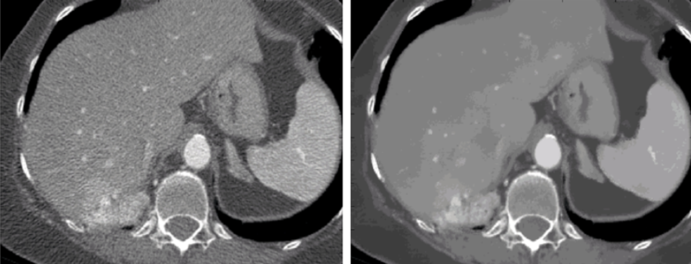
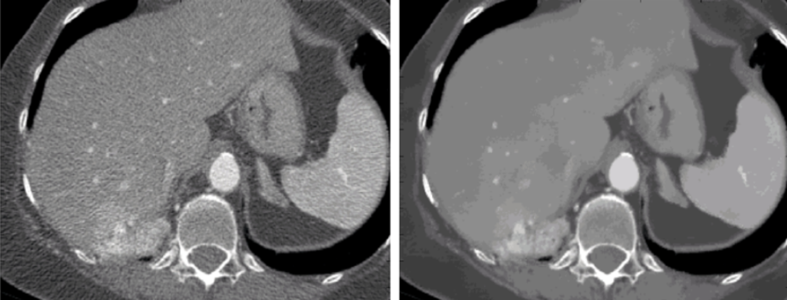

Download
Abstract
This project simulates the Expectation Maximization (EM) algorithm for removing Poisson noise from medical images. The EM algorithm is particularly useful in this context because it allows for the estimation of the underlying image by iteratively maximizing the likelihood function, which accounts for the statistical nature of Poisson noise. Given the quantum nature of particles and their discrete arrival times, Poisson noise often manifests in medical imaging, especially in modalities like X-ray Computed Tomography (CT). This noise can lead to significant artifacts in the reconstructed images, which might result in diagnostic inaccuracies.
 

Figure 1: Top - Illustration of a CT scan procedure; Bottom - Denoising a CT image
To mitigate these issues, the EM algorithm is applied as it effectively separates the noise from the actual signal in the image data. By modeling the image acquisition process and noise characteristics, the algorithm iteratively refines the image estimate, ultimately converging on a solution that minimizes the impact of noise.
Find more details from the report: PDF
Problem Formulation
1. Observation
The distribution of $N_{ij}$ is given by,
$$ N_{ij} \sim Pois(a_{ij} \lambda_j) $$
Here, $Pois$ denotes the Poisson distribution with parameter $\lambda$. Consider a model matrix $A$, where $A = (a_{ij})$ $i = 1, \dots, n$ $j = 1, \dots, m$.
Then, the observations $Y_{i=1,…n}$ can be written as below,
$$ Y_i = \sum_{j=1}^m N_{ij} \sim \sum_{j=1}^m Pois(a_{ij} \lambda_j) $$
2. 3x3 cross section of voxel model
Each pixel represents the absorption coefficient. Below are examples of voxel models,
| *--------------------* |
| y3---\ | | | | |
| ---/ | p1 | p2 | p3 | |
- *--------------------* -
| y2---\ | | | | |
| ---/ | p4 | p5 | p6 | |
- *--------------------* -
| y1---\ | | | | |
| ---/ | p7 | p8 | p9 | |
| *--------------------* |
-------|------|-------
y9 y10 y11
|| || ||
\/ \/ \/
*--------------------*
| | | |
| p1 | p2 | p3 |
*--------------------*
| | | |
| p4 | p5 | p6 |
*--------------------*
| | | |
| p7 | p8 | p9 |
*--------------------*
-------|------|-------
EM Algorithm
1. Likelihood function
For the observations, the likelihood function can be written as,
$$ L(N_{ij})_ {ij}(\lambda) = \prod_i^n\prod_j^m e^{a_{ij} \lambda_j} \frac{(\lambda_j a_{ij})^{N_{ij}}}{N_{ij}!} $$
Then, log-likelihood function can be below,
$$ l(N_{ij})_ {ij}(\lambda) = \sum_i^n \sum_j^m (-\lambda_j a_{ij} + N_{ij}\log{(\lambda_j a_{ij})} -\log{(N_{ij}!)}) $$
Looking at the derivative of the log-likelihood with resprect to $\lambda_j$ we obtain
$$ \frac{d}{d \lambda_{j}}E[l_{(N_{ij})_ {ij}} | (Y_{i})_ {i}] = \sum_{i=1}^n -a_{ij} + \frac{1}{\lambda_j} E[(N_{ij})_ {ij} | (Y_{i})_ {i}] \quad \forall j=1,…,m $$
2. Parameter Update
Lemma. Let $X_1$, $X_2$ be independent Poisson distributions with
$$ X_1 \sim Pois(\lambda_1) $$
$$ X_2 \sim Pois(\lambda_2) $$
Then, $X_1|(X_1 + X_2) \sim B(X_1 + X_2, \frac{\lambda_1}{\lambda_1+\lambda_2})$.
By taking $X_1 = N_{ij}$ and $X_2 = Y_i − N_{ij}$, we find $N_{ij} |Y_i \sim B(Y_i, \frac{a_{ij}\lambda_j}{\sum_{k=1}^m a_{ik}\lambda_k})$
Because the expectation of a Binomial distribution with parameters $n$, $p$ is $np$ we have,
$$ E[N_{ij}|Y_i] = \frac{Y_i a_{ij}\lambda_j}{\sum_{k=1}^m a_{ik}\lambda_k} $$
Therefore,
$$ \frac{d}{d \lambda_{j}}E[l_{(N_{ij})_ {ij}} | (Y_{i})_ {i}] = \sum_{i=1}^n -a_{ij} + \frac{1}{\lambda_j} \frac{Y_i a_{ij}\lambda_{j}^{old}}{\sum_{k=1}^{m} a_{ik}\lambda_{k}^{old}} \quad \forall j=1,…,m $$
Setting the derivative to 0 to find a possible maximum gives,
$$ 0 = \sum_{i=1}^n -a_{ij} + \frac{1}{\lambda_j} \frac{Y_i a_{ij}\lambda_{j}^{old}}{\sum_{k=1}^{m} a_{ik}\lambda_{k}^{old}} $$
Solving for all $\lambda_j$ gives,
$$ \lambda_j = \frac{\lambda_{j}^{old}}{\sum_{i=1}^{n} a_{ij}} \sum_{i=1}^n \frac{Y_i a_{ij}}{\sum_{k=1}^{m} a_{ik}\lambda_{k}^{old}} $$
3. EM Algorithm MATLAB code
function X_new = EM_algorithm(A, y, X)
n = length(X);
m = length(y);
% Starting EM Algorithm
for j = 1:n
for i = 1:m
den1 = A*X;
% Compute the probability
prob(i) = y(i)*A(i,j)/den1(i);
end
% E step to copute expectation
expectation(j) = sum(prob);
den2(j) = sum(A(:,j));
% M step to maximize likelihood
X_new(j) = X(j)/den2(j)*expectation(j);
end
end
4. Result
The Expectation Maximization (EM) algorithm was implemented in MATLAB to reduce noise and estimate the 9 parameters from a 3x3 pixel matrix. To validate its performance, 10000 Monte Carlo simulations were conducted, and the resulting EM estimates were used to recover the underlying data.
As shown in Figure 2, the EM algorithm exhibited a monotonically increasing likelihood as it converged toward a stable solution.
The Cramér-Rao Lower Bound (CRLB) was used as a benchmark to assess the efficiency of the mean squared error (MSE) for each parameter. To further evaluate performance, the signal gain was varied from 0.1 to 10, with both the CRLB and MSE as illustrated in Figure 3.
Figure 2: Log-likelihood maximization progress over iterations
Figure 3: MSE comparison with CRLB
Implementation
To implement the code, follow these steps:
- Clone the repository from GitHub.
- Run the
main.mfile to complete the EM algorithm and estimate the body model matrix coefficients.
Reference
[1] C. F. van Oosten, “The EM-algorithm for Poisson data,” Bachelor’s thesis, Mathematical Institute, Leiden University, Leiden, The Netherlands, Aug. 2014.